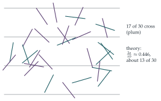

By making the substitution \(y = \cos^{-1}t\), or otherwise, show that \[\int_0^1\cos^{-1}t\,\mathrm{d}t = 1.\] A pin of length \(2a\) is thrown onto a floor ruled with parallel lines equally spaced at a distance \(2b\) apart. The distance \(X\) of its centre from the nearest line is a uniformly distributed random variable taking values between \(0\) and \(b\) and the acute angle \(Y\) the pin makes with a direction perpendicular to the line is a uniformly distributed random variable taking values between \(0\) and \(\pi/2\). \(X\) and \(Y\) are independent. If \(X = x\) what is the probability that the pin crosses the line?
If \(a < b\) show that the probability that the pin crosses a line for a general throw is \(\dfrac{2a}{\pi b}\).
The hook
Drop a needle onto a floor of parallel floorboards. The chance that it lies across a crack involves \(\pi\), even though there is no circle anywhere in sight. Count the crossings in many throws and you can estimate \(\pi\) by experiment. This is Buffon’s needle, posed by Georges-Louis Leclerc, Comte de Buffon, in 1733 and solved by him in 1777: the first problem in geometric probability, and the ancestor of every Monte Carlo method.
The \(\pi\) comes from the angle: the needle’s direction is uniform on a half-turn, and averaging the length of its “shadow” across the lines over all directions gives a factor \(\frac2\pi\). The question does the calculation with an integral of \(\cos^{-1}\).
Before you start
The pin’s centre is at distance \(x\) from the nearest line, and the pin makes angle \(y\) with the perpendicular to the lines. How far does the pin reach towards the line?
Each half of the pin has length \(a\), and its component perpendicular to the lines is \(a\cos y\). So the pin crosses the nearest line exactly when \(a\cos y \geq x\). (Since \(a < b\), it cannot reach any other line.)
Working it through
Stage 1 The integral
With \(t = \cos y\), as \(t\) goes from \(0\) to \(1\), \(y = \cos^{-1}t\) goes from \(\frac\pi2\) to \(0\), and \(\mathrm{d}t = -\sin y\,\mathrm{d}y\). So \[\int_0^1\cos^{-1}t\,\mathrm{d}t = \int_0^{\pi/2}y\sin y\,\mathrm{d}y = \bigl[-y\cos y\bigr]_0^{\pi/2} + \int_0^{\pi/2}\cos y\,\mathrm{d}y = 0 + 1 = 1. \qed\] (Or: the integral is the area between the graph of \(\cos^{-1}\) and the axes, which is the same as the area under \(y = \cos x\) from \(0\) to \(\frac\pi2\), reflected in \(y = x\).)
Stage 2 Given the position
For fixed \(x\), which angles \(y\) give a crossing? What is their probability?
If \(x \geq a\), the pin cannot reach the line. If \(x < a\), a crossing needs \(\cos y \geq \frac xa\), that is \(y \leq \cos^{-1}\frac xa\). Since \(Y\) is uniform on \([0, \frac\pi2]\), \[\mathrm{P}(\text{cross} \mid X = x) = \frac{2}{\pi}\cos^{-1}\frac xa \qquad (0 \leq x < a). \qed\]
Stage 3 Averaging over the position
\(X\) is uniform on \([0, b]\), with density \(\frac1b\), so \[\mathrm{P}(\text{cross}) = \frac1b\int_0^a\frac2\pi\cos^{-1}\frac xa\,\mathrm{d}x = \frac{2a}{\pi b}\int_0^1\cos^{-1}t\,\mathrm{d}t = \frac{2a}{\pi b}, \qed\] substituting \(x = at\).
With a needle exactly as long as the half-spacing (\(a = \frac{b}{2}\), so the needle’s length \(2a\) equals \(b\)), the crossing probability is \(\frac1\pi\). How many throws would you need to estimate \(\pi\) to two decimal places?

Looking back
Two independent coordinates. The pin’s position and angle were independent and uniform, so the probability was a double integral that could be done one variable at a time.
Condition, then average. First fix \(x\) and average over the angle; then average over \(x\).
A substitution reveals the constant. Scaling \(x = at\) reduced the answer to a single universal integral.
What’s really going on
Buffon’s noodle
Here is a way to see the answer with almost no calculation. Bend the needle into any shape, a “noodle”, and let \(C\) be the number of times it crosses a line. By linearity of expectation, the expected number of crossings of a curve is the sum over its small pieces, so it is proportional to the length: \(\mathrm{E}(C) = \kappa L\) for some constant \(\kappa\). To find \(\kappa\), take the noodle to be a circle of diameter equal to the line spacing \(2b\): it always crosses exactly twice, and its length is \(2\pi b\). So \(\kappa \cdot 2\pi b = 2\), giving \(\kappa = \frac{1}{\pi b}\). For a straight needle of length \(2a < 2b\), which crosses at most once, \(\mathrm{P}(\text{cross}) = \mathrm{E}(C) = \frac{2a}{\pi b}\). This argument is due to Joseph-Émile Barbier (1860), and it is a gem of probabilistic reasoning: the \(\pi\) comes from the circle that was chosen to calibrate the constant.
Estimating \(\pi\), and how not to
If \(n\) needles are thrown and \(c\) cross, then \(\frac cn \approx \frac{2a}{\pi b}\) and \(\pi \approx \frac{2an}{bc}\). The error shrinks only like \(\frac{1}{\sqrt n}\), so to get \(\pi\) to three decimal places needs about a million throws. In 1901 the Italian mathematician Mario Lazzarini claimed to have obtained \(\pi \approx \frac{355}{113} = 3.1415929\ldots\) (correct to six decimal places) from \(3408\) throws. Statisticians have pointed out that the result is far too good to be true: with \(3408\) throws and a carefully chosen needle, \(\frac{355}{113}\) arises from exactly \(1808\) crossings, and stopping the experiment at the right moment would produce it. It is a classic cautionary tale about selective reporting.
Buffon was a naturalist, director of the royal botanical garden in Paris and author of a \(36\)-volume natural history. He presented the needle problem (and a version with square tiles, the “franc-carreau” game) to the Académie des Sciences in 1733, and published the solution in 1777. His aim was to show that geometry, not just arithmetic, could be used in probability. Integral geometry, the theory of random lines and their intersections with curves and surfaces, grew from it, and is now used in stereology, the science of estimating the size and shape of three-dimensional structures (such as cells in a tissue) from two-dimensional slices.
The thinking skill
When an outcome depends on several independent continuous random variables, the probability of an event is the integral of the joint density over the region where the event occurs.
At university this becomes the foundation of continuous probability: joint densities, marginal distributions and changes of variable, all of which reappear in Section 12.21 and Section 12.22.
Try this next
A long needle. If \(a > b\), the needle may cross more than one line. Show that the expected number of crossings is still \(\frac{2a}{\pi b}\).
The noodle. Bend a needle of length \(2a\) into a right angle (two arms of length \(a\)). What is the expected number of crossings?
Square tiles. A coin of radius \(r\) is tossed onto a floor of square tiles of side \(s > 2r\). Find the probability that it lies entirely within one tile.
Lazzarini’s needle. With \(a = \frac56b\) (so that \(\frac{2a}{\pi b} = \frac{5}{3\pi}\)), show that \(3408\) throws with \(1808\) crossings give the estimate \(\pi \approx \frac{355}{113}\).
Further reading
Daniel Klain & Gian-Carlo Rota, Introduction to Geometric Probability (Cambridge University Press), which starts from Buffon’s needle.
Lee Badger, “Lazzarini’s lucky approximation of \(\pi\)”, Mathematics Magazine 67 (1994). The statistics of a suspicious experiment.
Paul Nahin, Digital Dice (Princeton University Press). Monte Carlo methods for probability problems.